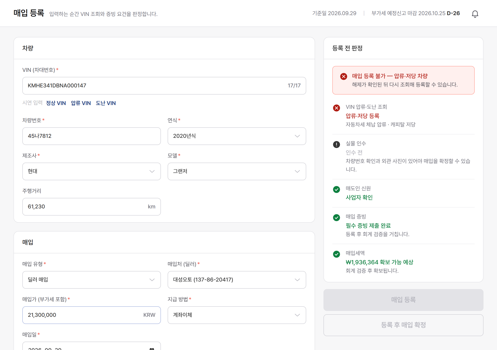
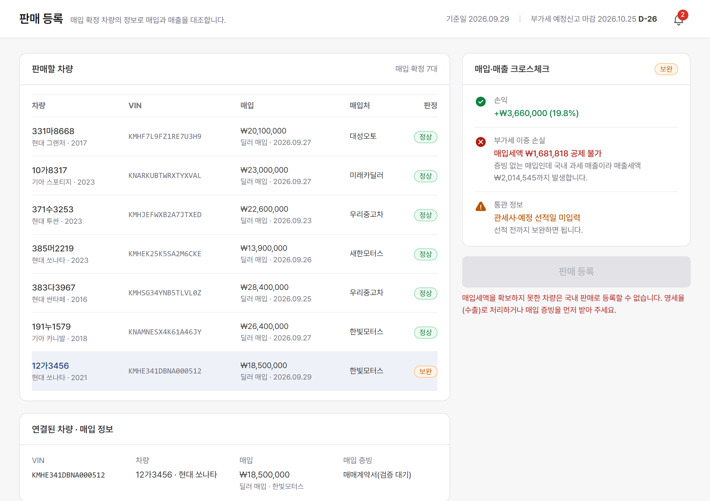
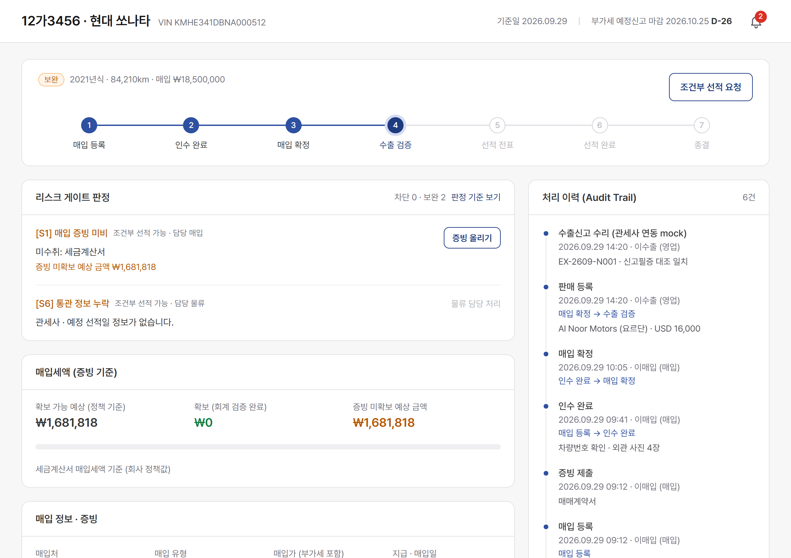
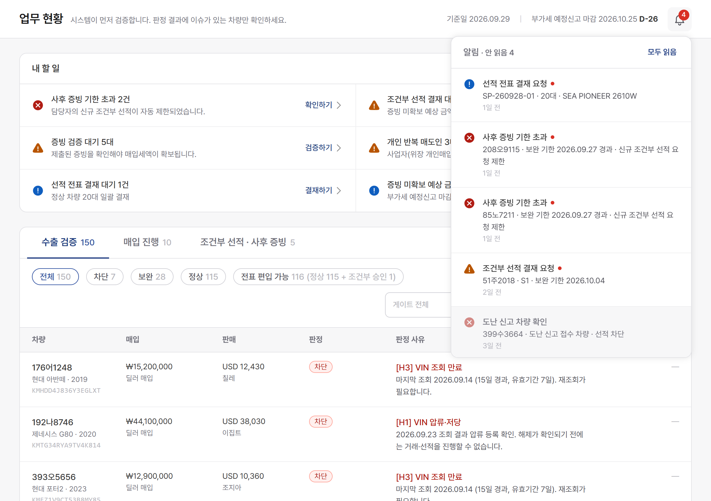
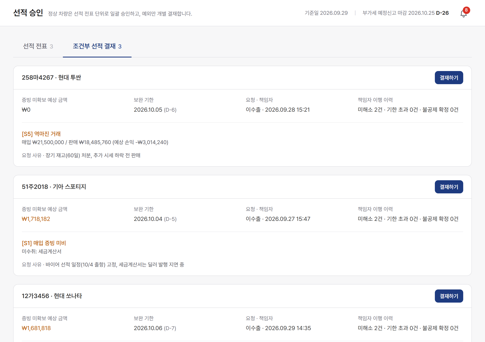
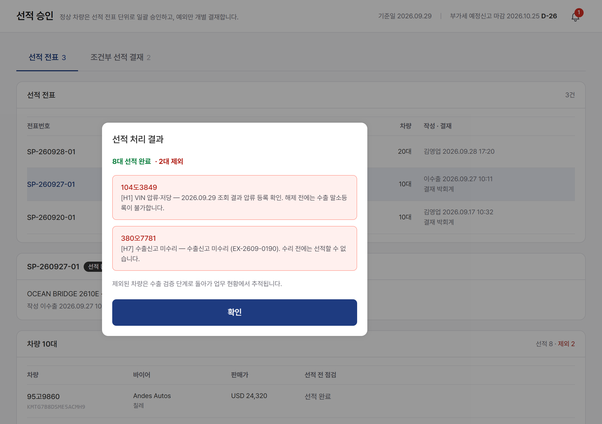

스마트 중고차 수출 ERP
솔루션 기획안
막아야 할 차는 누구도 못 풀게, 보내도 되는 차는 오늘 보내게.
매입·판매·선적의
순간마다 리스크를 판정해 속도와 통제를 함께 지킵니다.
두 분의 요구는 모두 맞습니다.
문제는 200대를 모두 같은 무게로 보고 있다는 점입니다.
"오늘 매집한 차량은 오늘 선적해야 이윤이 남습니다."
- 중고차는 하루가 다르게 시세가 떨어진다
- 서류 때문에 선적이 멈추면 손실이 확정된다
- 요구: 빠른 선적, 반복 입력 없는 업무 자동화
"증빙 매칭과 압류·도난 확인 전에는 단 1대도 안 됩니다."
- 현금 매입을 계산서 매출로 잡거나 영세율 처리를 잘못하면 부가세 손실
- 외부감사 대상인데 엑셀 수기로는 세무조사에 대응할 수 없다
- 요구: 언밸런스 알람, VIN 압류·도난 조회, 부가세 손실 방지
엑셀 수기 관리에서는 한 대의 문제가 전체 선적을 멈추거나, 반대로 확인 없이 전부
나갑니다.
제안: 차량마다 리스크를 판정해, 막을 차만 막고 나머지는 보냅니다.
"선적할까 말까"가 아니라 "무엇을 막고 무엇을 먼저 보낼까"로 나눕니다
되돌릴 수 없는 리스크
압류·저당, 도난, 실물·매도인 신원 미확인, 신고필증 VIN 불일치, 수출신고 미수리
어떤 승인으로도 우회할 수 없습니다. 압류·도난 차량은 매입 등록 버튼부터 막힙니다.
서류로 메울 수 있는 리스크
매입 증빙 미비·유형·금액 불일치, 반복 매도인, 역마진, 통관 정보 누락, 국내 판매 전환
원칙은 선적 전 보완입니다. 서류로 사후 보완할 수 있는 항목만 회사 정책에 따라 조건부 선적 대상으로 분리하며, 회계 책임자의 명시적 승인과 기한·책임자 지정 없이는 진행할 수 없습니다.
걸리는 것이 없는 차량
매입 증빙 검증 완료, VIN 조회 유효, 신고필증 일치
선적 전표 단위로 일괄 결재합니다. 한 대씩 결재하지 않습니다.
정상 115대는 전표로 묶어 바로 나가고, 회계 팀장은
보완 28대와 차단 7대만 들여다보면 됩니다.
※ 나머지 50대는 매입 진행 10 · 선적 전표 30 · 선적 완료 10. 구성 비율은 시연용 mock
데이터 기준입니다.
15개 판정 기준 — 언제 판정하고, 어떻게 풀리는가
| 코드 | 차단 (Hard) | 판정 시점 | 해소 |
|---|---|---|---|
| H1 | VIN 압류·저당 | 매입 등록 · 재조회 | 해제 후 재조회 |
| H2 | VIN 도난 신고 | 매입 등록 · 재조회 | 해소 불가 · 거래 중단 |
| H3 | VIN 조회 만료 (7일) | 수출 검증 | 재조회 |
| H4 | 실물 인수 미확인 | 매입 확정 전 | 인수 처리 (사진) |
| H5 | 매도인 신원 미확인 | 매입 확정 전 | 신분증·사업자 증빙 |
| H6 | 신고필증 VIN 불일치 | 판매 등록 이후 | 정정 후 재대조 |
| H7 | 수출신고 미수리 | 선적 처리 | 수리 확인 |
| 코드 | 보완 (Soft) | 판정 시점 | 해소 |
|---|---|---|---|
| S1 | 매입 증빙 미비 · 검증 대기 | 매입 등록 이후 | 제출 → 회계 검증 |
| S2 | 증빙 유형 불일치 (영수증만) | 매입 등록 이후 | 세금계산서 수취 |
| S3 | 계산서 금액 ≠ 매입가 | 매입 등록 이후 | 정정 계산서 |
| S4 | 반복 매도인 (월 3대+) | 매입 등록 이후 | 회계 확인 |
| S5 | 역마진 | 판매 등록 | 사유 기재 · 회계 확인 |
| S6 | 통관 정보 누락 (예정 선적일) | 판매 등록 이후 | 물류 보완 |
| S7 | 신고필증 차량번호 불일치 | 판매 등록 이후 | 정정 후 재대조 |
| S8 | 국내 판매 전환 | 판매 등록 | 회계 확인 |
서류 항목(S1·S2·S3·S6·S7)은 조건부 선적으로 사후 보완할 수 있고, 판단 항목(S4·S5·S8)은 보완할 서류가 없어 회계 확인으로만 해소합니다(기한 없음).
매입세액을 확보하지 못한 차량의 S8(부가세 이중 손실)은 손실 금액을 표시하고 회계 팀장 확인
전 진행을 막습니다.
기한·한도·반복 기준 같은 규칙값은 코드가 아니라 회사 정책값으로
분리해 회계팀이 조정합니다.
차단 항목이 없고 보완 항목이 모두 해소되면, 수출 검증 정상입니다
| 검증 항목 | 정상 조건 | 실패 시 |
|---|---|---|
| VIN | 압류·저당·도난 없음 + 조회 유효기간 이내 | 차단 · H1 H2 H3 |
| 실물 인수 | 인수자 · 차량번호 · 외관 사진 확인 완료 | 차단 · H4 |
| 매도인 | 신원 확인 (회사 정책상 필수) | 차단 · H5 |
| 수출신고필증 | VIN · 차량번호가 전산과 일치 | 차단 · H6 (VIN) / 보완 · S7 (차량번호) |
| 수출신고 | 수리 완료 | 차단 · H7 |
| 매입 증빙 | 유형별 필수 증빙 제출 + 회계 검증, 금액 일치 | 보완 · S1 S2 S3 |
| 매도인 반복 거래 | 기준 미만 또는 회계 확인 | 보완 · S4 |
| 손익 | 판매가 ≥ 매입가 또는 회계 확인 | 보완 · S5 |
| 통관 정보 | 관세사 · 예정 선적일 입력 | 보완 · S6 |
| 매출 처리 | 영세율(직수출) 또는 회계 확인 | 보완 · S8 |
판단 항목(S4·S5·S8)은 회계 확인이 끝나야 하고, 서류 항목이 남은 차량은 회사 정책이 허용한 경우에 한해 조건부 선적 승인이 남은 서류 항목을 모두 포함할 때만 전표에 담을 수 있습니다. 같은 표가 화면의 판정 기준 가이드에도 있습니다.
게이트는 대시보드가 아니라, 업무가 일어나는 7개의 순간에 붙어 있습니다
매입 등록
VIN을 입력하는 순간 압류·도난을 조회하고, 걸리면 등록되지 않습니다.
H1 H2 · S1–S4실물 인수
차량번호와 외관 사진으로 서류상 차량과 실물이 같은지 확인합니다.
H4매입 확정
차단 항목이 하나라도 남아 있으면 확정할 수 없습니다.
H1–H5판매 등록
매입 정보를 불러와 손익·증빙·통관을 대조하고, 이중 손실이면 금액을 보여 회계 확인을 받게 합니다.
H6 · S5–S8선적 전표
정상 차량은 묶어서 한 번에 결재하고, 보완 차량은 조건부 승인분만 담습니다.
조건부 승인선적 처리
출항 직전 다시 조회해 새로 걸린 차만 빼고 나머지를 보냅니다.
H1 H2 H7사후 보완
선적 후에도 증빙 기한을 추적하고, 검증되면 자동으로 종결합니다.
S1 기한 추적상태는 두 축으로
진행 단계(차가 어디에 있나)와 리스크 판정(무엇이 걸려 있나)을 분리해, "선적은 끝났지만 증빙은 미완"도 정확히 추적합니다.
화면에서 본 판정 = 저장되는 판정
미리보기와 실제 등록이 같은 판정 함수를 쓰고, 저장 시점에 권한과 전이 규칙을 다시 검증합니다. 빨강은 우회 불가, 주황은 조건부 통과입니다.
두 번 조회하고, 오래된 조회 결과는 믿지 않습니다
압류·저당 여부는 수출 전 반드시 확인해야 하는 거래 리스크로 보고, 도난 신고가 확인된 차량은 거래·선적 대상에서 제외합니다. 그래서 결재로도 풀 수 없는 "차단"입니다.
들어오는 문을 막는다
17자리가 입력되는 순간 조회합니다. 압류·저당·도난이면 매입 등록·인수 버튼이 비활성화되고 저장 시점에도 다시 막습니다.
오래된 결과는 믿지 않는다
압류는 매입 뒤에도 새로 걸릴 수 있습니다. 마지막 조회가 7일을 넘으면 [H3] 조회 만료로 막고 재조회를 요구합니다.
나가는 문에서 다시 본다
선적 처리하는 순간 전표의 전 차량을 다시 조회해 새로 걸린 차만 제외하고, 나머지는 그대로 출항합니다.
연동 구조
도난차량 — 도난
과제 범위에서는 외부 조회를 mock 데이터로 대체했습니다. 어댑터 뒤의 조회처만 바꾸면 실연동됩니다.
| 조회 결과 | 처리 | 알림 (재조회 시) |
|---|---|---|
| 압류·저당 | 등록·인수·판매 차단, 해제 후 재조회로 풀림 | 회계 · 영업 |
| 도난 | 거래 중단 대상, 해소 불가 | 회계 · 영업 |
| 이상 없음 | 7일간 유효, 이후 재조회 | — |
손익, 증빙, 거래 유형을 섞지 않고 나눠서 대조합니다
| 구분 | 무엇을 대조하나 | 걸리면 |
|---|---|---|
| A. 매입·매출 언밸런스 경제적 손익 |
판매가(원화 환산) < 매입가 | 보완 · S5 역마진 → 사유 기재 · 회계 확인 |
| B. 매입 증빙 세무 리스크 |
유형별 필수 증빙 제출 · 회계 검증 여부, 계산서 금액 = 매입가 | 보완 · S1 S3 → 증빙 미확보 예상 금액 표시 |
| C. 거래 유형 불일치 회사 정책과의 불일치 |
매입 유형 + 증빙 유형 + 매출 처리(영세율 / 국내 과세) | 보완 · S2 S8 → 회계 확인 |
판매 등록 순간 세 가지를 따로 판정하고, 회계에도 서로 다른 알림으로 보냅니다. 금액은 세무 계산이 아니라 "증빙이 비는 만큼"의 예상 금액이며, 산정 방식과 공제 요건은 회사 정책값으로 두고 세무 자문으로 확정합니다. 손익은 판매 등록 환율 기준 예상치이고, 영세율 과세표준은 선적 처리 때 선적일 기준환율로 따로 기록합니다(선적 전 환가분은 범위 밖).
예시
딜러 매입, 세금계산서 미수취 → B 증빙 미확보 예상 금액
약 168만 원 (mock · 정책 기준 예상액)
같은 차를 국내 판매로 처리하면 → C 부가세 이중 손실(공제 없이 매출세액까지
발생). 불법이 아닌 손실이라 막지 않고, 손실 금액과 함께 회계 팀장 확인 전 진행 불가
왜 나누나
역마진은 영업이 설명할 일, 증빙은 매입 담당이 채울 일, 거래 유형은 회계가 판단할 일입니다. 한 덩어리 "언밸런스"로 알리면 누가 무엇을 해야 하는지 흐려집니다.
AI는 서류에서 값을 뽑아 전산과 맞춰볼 뿐, 수출 가능 여부는 판단하지 않습니다
| 문서 | AI가 추출·대조하는 값 | 불일치 시 | 판단 · 정정 |
|---|---|---|---|
| 수출신고필증 시연 구현 (mock) |
VIN · 차량번호 ↔ 전산 차량 정보 | 차단 · H6 (VIN) / 보완 · S7 (차량번호) | 물류 |
| 세금계산서 설계 |
공급가액·세액, 공급자 사업자등록번호 ↔ 매입가 · 매입처 | 보완 · S3 금액 불일치 | 회계 |
| 매매계약서 · 이전등록 서류 설계 |
VIN · 차량번호 · 매도인 ↔ 전산 차량 · 매입처 | 검토 필요로 표시 → 회계 검증에서 확인 | 회계 |
| 필수 서류 존재 설계 |
매입 유형별 필수 서류가 모두 올라왔는지 | 보완 · S1 증빙 미비 | 매입 |
AI 결과는 네 가지뿐
일치 · 불일치 · 추출 실패 · 검토 필요. 추출 실패와 검토 필요는 사람이 원본을 보고 판단합니다.
판정은 규칙이 합니다
AI 결과는 게이트 판정의 입력값 중 하나입니다. 차단·보완 여부는 같은 판정 함수가 정합니다.
정정은 담당자가 합니다
불일치를 AI가 고치지 않습니다. 담당자가 정정본을 받아 다시 대조하고, 그 과정이 처리 이력에 남습니다.
알림은 상태판이 아니라, 일이 생긴 순간 책임자에게 갑니다
| 언제 | 누구에게 | 알림 예 |
|---|---|---|
| 판매 등록 시 크로스체크 | 회계 | 매입·매출 언밸런스 · 역마진 / 매입 증빙 미확보 · 증빙 미확보 예상 금액 / 거래 유형 불일치 · 부가세 이중 손실 |
| VIN 재조회에서 압류·도난 확인 | 회계 · 영업 | VIN 재조회 압류 · 차량번호 · 선적 차단 |
| 선적 처리 중 차단 차량 제외 | 회계 · 영업 | 선적 차단 2대 · SP-260927-01 · 104도3849, 380오7781 — H1, H7 |
| 조건부 선적 요청 | 회계 팀장 | 조건부 선적 결재 요청 · S1 · 보완 기한 · 증빙 미확보 예상 금액 |
| 조건부 선적 · 전표 결재 결과 | 요청자 · 물류 | 조건부 선적 승인 / 선적 처리 요청 · 출항일 |
| 증빙 제출 / 반려 | 회계 / 제출자 | 증빙 검증 요청 / 증빙 반려 · 재제출 필요 |
| 사후 증빙 기한 초과 | 책임자 · 회계 | 사후 증빙 기한 초과 · 신규 조건부 선적 요청 제한 |
누르면 바로 그 화면
알림마다 해당 차량·전표·결재 화면으로 이동합니다. 읽음 여부는 사용자별로 관리합니다.
본인 행동은 본인에게 보내지 않음
알림이 쌓여 무시되는 일을 막기 위해, 행동한 사람을 뺀 담당자에게만 보냅니다.
내 할 일 ≠ 알림
내 할 일은 지금 처리할 목록, 알림은 무슨 일이 있었는지의 이력입니다.
조건부 선적은 예외입니다 — 승인·기한·책임자 없이는 진행할 수 없고, 사후 증빙은 시스템이 받아냅니다
요청
서류 보완 항목에 대해 사유와 기한(최대 7일, 신고 마감 5일 전까지)을 적어 요청합니다. 요청자가 곧 책임자입니다.
결재
증빙 미확보 예상 금액과 요청자의 이행 이력(미해소·기한 초과·지연 보완·불공제 확정)을 보고 결정합니다.
전표 편입 · 선적
승인된 차량만 전표에 담깁니다. 차단 항목은 애초에 요청 대상이 아닙니다.
사후 보완 중
선적 후에도 "사후 보완 중"으로 남아 D-day와 함께 추적됩니다.
종결
증빙이 제출되고 회계 검증이 끝나면 사후 증빙 보완 완료 → 종결이 자동 기록됩니다.
지키지 않으면 다음이 막힙니다
담당자별 미해소 조건부 선적 한도. 한도에 닿으면 새로 요청할 수 없습니다.
한 건이라도 넘기면 그 담당자의 신규 조건부 선적 요청이 자동 제한됩니다.
요청 뒤 압류 등 차단 항목이 생기면 승인 버튼이 비활성화되고 반려만 가능합니다.
속도는 전표로 묶어서 내고, 안전은 차량별로 지킵니다
정상 차량은 전표 단위 일괄 결재
- 영업이 정상 차량과 조건부 승인된 보완 차량을 골라 선박·항차로 전표를 만듭니다
- 회계 팀장은 차량 20대를 한 번의 결재로 승인합니다
- 물류는 결재 승인된 전표만 선적 처리할 수 있습니다 (승인 전 처리 불가)
선적 처리 직전, 전 차량 재판정
- VIN 재조회 + 수출신고 수리 여부 + 승인되지 않은 보완 항목을 다시 확인
- 걸린 차만 전표에서 빠지고 나머지는 그대로 출항합니다
- 제외된 차량은 수출 검증 단계로 돌아가 업무 현황에서 추적됩니다
전표 결재는 차량별 선적 가능 상태를 전제로 한 승인입니다. 결재 이후 새로 압류된 차량(H1)과 수출신고가 수리되지 않은 차량(H7)은 승인 효력이 취소되어 자동 제외되고, 나머지는 멈추지 않습니다.
실무 적용 시 재조회는 CY 반입·적입 전과 수출신고 전에 걸고, 적입 이후 제외되는 차량은 재작업과 수출신고 정정·취하 절차로 넘깁니다.
영업도, 회계도 잃는 것이 없습니다
정상 차는 멈추지 않고, 무엇을 채우면 나갈 수 있는지 보입니다
- 정상 차량은 전표 단위 일괄 결재로 당일 선적
- 사후 보완이 가능한 항목은 회계 승인·기한·책임자를 붙여 조건부 선적 요청 가능
- 무엇이 부족하고 누가 처리할지 화면이 알려줌 (판정 사유·담당 역할)
- 판매 등록 시 매입 정보 자동 연결 — 재입력 없음
- 선적 직전 문제 차가 생겨도 그 한 대만 빠짐
압류·도난은 누구도 못 풀고, 부가세 손실은 금액으로 보입니다
- 압류·도난은 매입 등록부터 차단, 결재로도 우회 불가
- 증빙이 비는 만큼을 증빙 미확보 예상 금액으로 표시
- 이중 손실(무증빙 매입 + 국내 과세 매출)은 손실 금액과 함께 회계 확인 전 진행 불가
- 사후 증빙은 기한·한도·자동 제한으로 강제
- 모든 결정은 처리 이력에 — "왜 이 차가 승인됐나"에 답할 수 있음
VIN을 넣는 순간, 등록할 수 있는지부터 답합니다
- 우측 판정 패널 맨 위에 결론 한 줄 "매입 등록 불가 — 압류·저당 차량"
- 그 아래 VIN 조회·실물 인수·매도인 신원·증빙·매입세액을 항목별로 판정
- 다른 항목을 모두 채워도 등록 버튼 두 개 모두 비활성

매출 처리를 바꾸는 순간 부가세 결과가 달라집니다
- 매입 확정 차량을 고르면 매입 정보가 자동 연결
- 크로스체크가 손익·매입 증빙·거래 유형·통관을 결론 먼저 보여줌 — 영세율이면 손익을 증빙 확보 시 / 미확보 시로 나란히
- 무증빙 매입을 국내 판매로 처리하면 부가세 이중 손실 — 손실 금액 표시, 회계 팀장 확인 전 진행 불가

왜 걸렸는지, 누가 풀어야 하는지, 얼마가 걸려 있는지
- 게이트마다 판정 사유 · 담당 역할 · 해소 버튼
- 매입세액을 확보 / 증빙 미확보 예상 금액으로 나눠 표시
- 처리 이력(Audit Trail)에 단계 전이·결재·증빙이 모두 남음

200대를 다 보지 않고, 걸러진 차만 봅니다
- 역할별 내 할 일 — 누르면 필터된 목록으로 이동
- 차단·보완·정상·전표 편입 가능(정상 + 조건부 승인)으로 나눠 보기, 게이트별 필터
- 헤더 알림 센터 — 역마진·증빙 미확보·결재 요청·기한 초과가 도착

무엇을, 언제까지, 누가, 얼마짜리 리스크인지 보고 결정합니다
- 증빙 미확보 예상 금액 · 보완 기한(D-day) · 요청자
- 요청자의 이행 이력 — 미해소·기한 초과·지연 보완·불공제 확정 건수
- 결재 이력은 아래에 남아 사후 감사에 대응

선적 직전 재조회로 걸린 차만 빠지고, 나머지는 나갑니다
- 결재 승인된 전표만 선적 처리 가능
- 처리 순간 전 차량 VIN 재조회 + 재판정
- 8대 선적 · 2대 제외 — 제외 사유와 차량이 바로 표시되고 회계·영업에 알림

차량을 중심으로 매입·판매가 붙고, 선적은 전표–차량 연결로 편입·제외 이력을 남깁니다
차단·보완 판정과 증빙 미확보 예상 금액은 저장하지 않고, 증빙·조회 결과 같은 원본 데이터로 볼 때마다 다시 계산합니다. 설계에서는 SHIPMENT_VEHICLE을 통해 전표와 차량을 연결하고, 차량별 편입·제외·선적 상태와 제외 사유를 관리합니다.
시연 순서
| # | 사용자 | 화면 | 보여줄 것 |
|---|---|---|---|
| 1 | 박회계 (회계) | 업무 현황 | 200대를 다 보지 않고 차단·보완 차량과 증빙 미확보 예상 금액만 확인. 알림 센터 |
| 2 | 이매입 (매입) | 매입 등록 | 압류·도난 VIN → 등록 자체 차단 / 정상 VIN + 세금계산서 없이 등록·확정 → [S1] |
| 3 | 이수출 (영업) | 판매 등록 | 매입 정보 자동 연결, 증빙 미확보 예상 금액. 국내 판매로 바꾸면 이중 손실 금액 표시, 회계 확인 전 진행 불가 |
| 4 | 이수출 (영업) | 차량 상세 | 게이트별 판정 사유 → 조건부 선적 요청 (보완 항목·기한·증빙 미확보 예상 금액) |
| 5 | 박회계 (회계) | 조건부 선적 결재 | 알림에서 바로 이동, 요청자의 이행 이력을 보고 승인 |
| 6 | 이수출 (영업) | 업무 현황 | 정상 차량과 조건부 승인된 보완 차량을 골라 선적 전표 생성 |
| 7 | 박회계 → 최물류 | 선적 승인 | 박회계가 6의 전표를 일괄 결재 → 최물류가 선적 처리 (조건부 승인 차량은 "사후 보완 중"으로). 결재된 SP-260927-01을 처리하면 새로 압류된 차·미수리 차만 자동 제외 |
| 8 | 이매입 → 박회계 | 차량 상세 | 선적 후 "사후 보완 중" → 증빙 제출 → 회계 검증 → 자동 종결, 처리 이력으로 추적 |
| + | 김영업 (영업) | 업무 현황 | 사후 증빙 기한 초과 2건 → 신규 조건부 선적 요청이 자동 제한 |
시연 기준일은 2026.09.29로 고정되어 있고, 좌측 하단에서 사용자(역할)를 바꿔 가며 진행합니다. 매입·판매 등록 화면은 권한 있는 역할에게만 보이고, 그 밖의 권한 없는 업무는 버튼이 비활성화됩니다.
이 설계가 하는 일과 하지 않는 일
구현 범위
- 매입 등록 → 판매 등록 → 선적 전표·결재 → 선적 → 사후 보완 → 종결 전 흐름
- 리스크 게이트 15종, 조건부 선적, 알림 센터, 처리 이력, 판정 기준 안내 화면
- 역할 4종(매입·영업·회계·물류) 권한 · 화면과 저장 시점 이중 검증
- React · TypeScript · Zustand, mock 데이터 200대
대체 · 가정
- VIN 압류·도난 조회, 환율, 수출신고(관세사) 연동은 mock으로 대체
- 중고자동차 매입세액 공제 특례의 적용 요건 등 세법 요건은 세무 자문 영역 — 정책값으로 분리
- 개인 매입의 계좌이체 지급 요구는 증빙을 남기기 위한 회사 기준
- 보완 기한 7일 · 담당자별 한도 3건 · 반복 매도인 월 3대 · VIN 조회 유효 7일은 임의로 정한 초기값이며, 회계팀이 정책값으로 바꿀 수 있음
- 수출 인보이스 발행은 구현 범위에서 제외 — 판매 등록 정보를 수출·선적 업무의 입력 데이터로 활용
- 매도인 신원 확인(H5)은 회사 내부 정책상 필수 항목으로 가정
- 직수출 기준 — 수출대행은 영세율 적용 주체·증빙이 달라져 범위 밖 (세무 확인)
조건부 선적의 리스크는 0이 아닙니다. 끝내 증빙이 오지 않으면 손실은 확정됩니다. 이 설계의 목표는 리스크를 없애는 것이 아니라, 얼마가, 누구 책임으로, 언제까지 걸려 있는지 보이게 하고 지키지 않으면 다음이 막히게 하는 것입니다.
운영 단계에서 붙일 것
- 경매 낙찰·딜러 엑셀 일괄 매입 import — 행마다 같은 게이트로 판정 후 등록
- 판매 등록 데이터로 인보이스·패킹리스트 자동 생성
- 조건부 선적 자동 승인 기준 — 예상 금액 기준 이하 + 이행 이력 양호 시 회계 팀장 병목 해소
- 매입→선적 단계별 체류 시간으로 리드타임 측정
- 지급 통제 — 세금계산서 수취 전 잔금 지급 보류, 현금 지급 시 가산세 경고
- 전자세금계산서 수취 내역 자동 대사
- 감사 산출물 — 차량별 증빙 패키지, 기간별 증빙 미확보 리포트
- 정책값 변경 이력 · 요청자와 결재자 분리(현재는 역할로 분리)
- 판매 취소 · 바이어 변경 · 매입 반품 · 수정세금계산서 · 반송
- 재조회 시점을 적입 전 · 수출신고 전으로, 자동차 전용선·컨테이너별 제외 후속 처리
- [H3] 조회 만료는 야간 자동 재조회로 사람 차단 목록에서 제외
- 매출 쪽 사후 추적 — B/L · 수출대금 입금 매칭 · 영세율 첨부서류
- 말소등록 여부·기한 추적
- 개인 매입 신고용 매도인 인적사항 필드